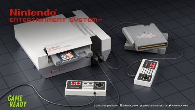

Nintendo.Nes
The Nintendo Entertainment System (NES), released in North America in 1985, is a landmark video game console that revitalized the gaming industry after the 1983 crash. It featured 8-bit graphics and an extensive library of iconic games, including classics like Super Mario Bros., The Legend of Zelda, and Metroid. The NES introduced the now-standard gamepad design and popularized concepts like save features and password systems in gaming. Its robust marketing and quality games established Nintendo as a dominant force in the gaming market, influencing the future of video game consoles and shaping gaming culture for decades to come.